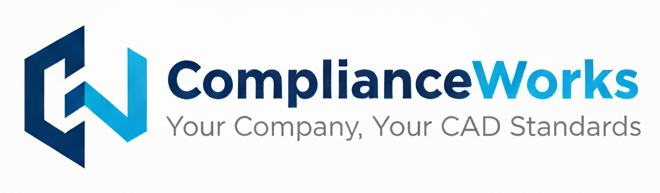
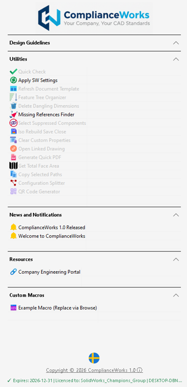
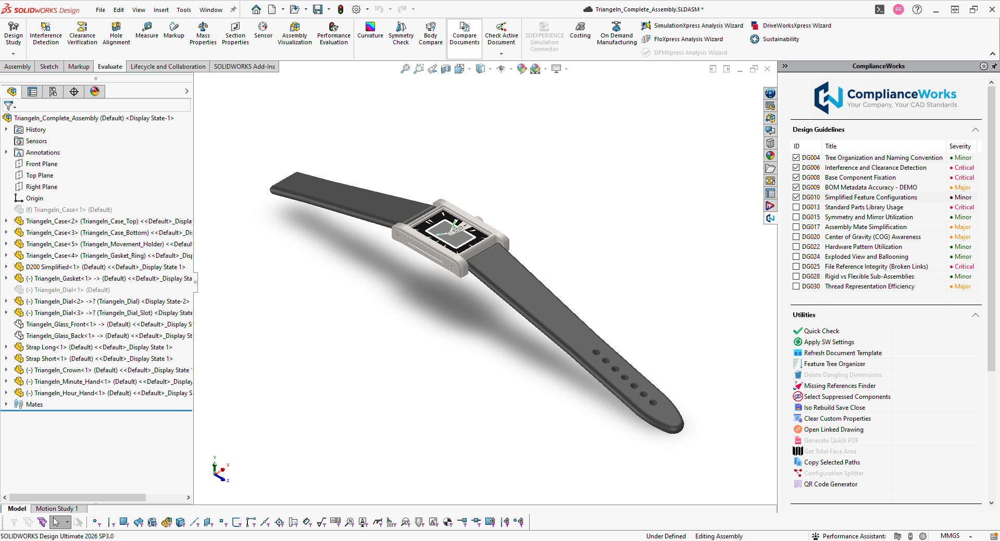
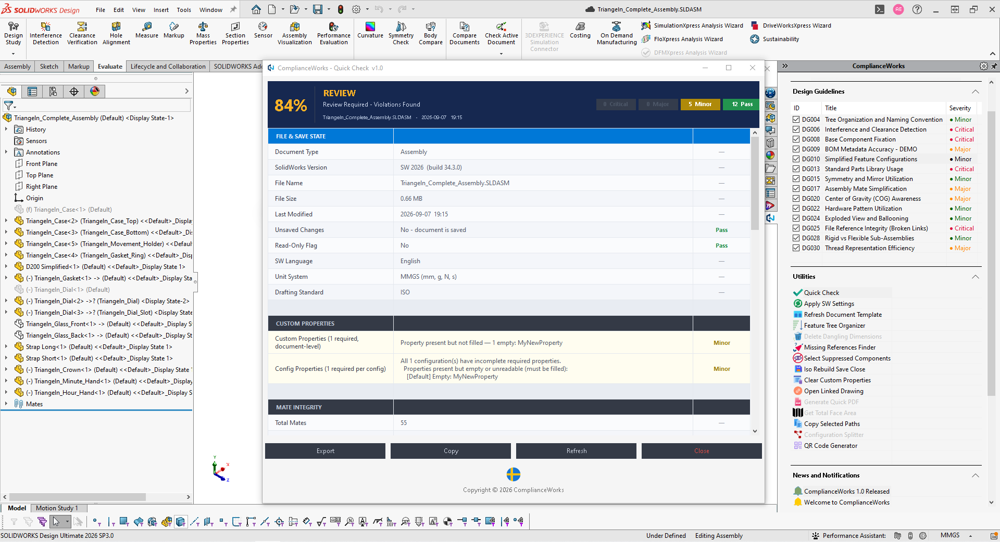
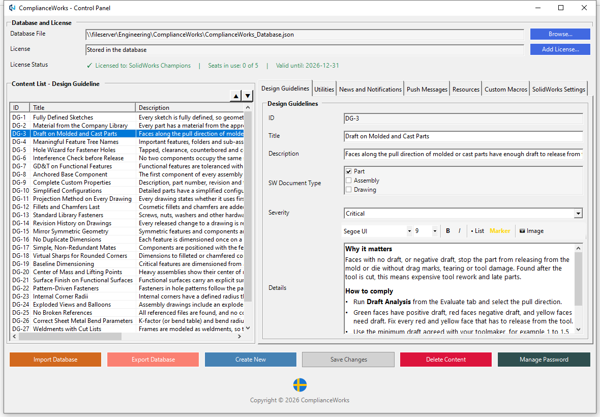

The CAD Standards Add-in for SolidWorks
Built for CAD administrators: define your company's CAD standards once, and ComplianceWorks keeps every engineer on them - automatically.
ONE COMMON SOLIDWORKS FOR ALL.
Built for CAD Administrators
If you own the CAD standards for a SolidWorks team, this CAD standards add-in is the tool you have been missing: one place to define the rules, and one place to know they are being followed.
Define Once
Write your design guidelines, required SolidWorks settings, templates, macros and resources in one password-protected control panel - no scripts, no scattered documents.
Roll Out Without Chasing
Every user imports one database file from a shared folder. After that, each change you publish reaches the whole team by their next SolidWorks session - no reinstalls, no mass emails.
Check Compliance As Work Happens
Engineers tick off guidelines inside SolidWorks and run Quick Check scans, so deviations are caught before review or release instead of after.
Onboard New Hires Faster
Day one, a new engineer has the full CAD standards inside the tool they already work in. Standards stop living in one senior engineer's head.
Approve Before Release
Check files against your exact CAD standards and mark them approved, so drawings and models shared with suppliers, partners and customers always meet the same standard.
Stay In Control
Everything lives in one file on your own server. No license server, no cloud, no internet connection and no data collection.
The Problem: CAD Standards Nobody Follows
Every engineering team has standards. But keeping those standards consistent across the team is a nightmare. A new hire joins - someone has to sit down and walk them through every rule. A senior engineer leaves - that knowledge walks out the door with them. Standards update - you're emailing the whole team hoping everyone reads it. Someone works from home - their SolidWorks settings are different, their templates are different, nobody knows. The result: double work, rework, failed audits, and wasted hours reviewing drawings that should have been right the first time.
The Solution: A CAD Standards Add-in Inside SolidWorks
ComplianceWorks lives inside SolidWorks as a task pane - always there, right next to the model, with no separate application to open or switch to. An admin defines the rules once - design guidelines, required settings, templates, macros, and resources - and keeps them, license included, in a single database file in a shared folder on the company server.
Every user imports that file exactly once, from Tools > ComplianceWorks > Import Database. From that point on, every update the admin makes reaches the whole team the next time SolidWorks starts - no reinstallation, no mass emails, no chasing people down to check they're on the latest version.
- New hires get the full rulebook on day one, inside the tool they already work in.
- A process changes once - a setting, a template, a macro - and it's live for everyone by their next session.
- Compliance gets checked as work happens, not caught later in review.

The task pane, live inside SolidWorks
Screenshots
ComplianceWorks, live inside SolidWorks.



What It Does
Design Guidelines
Your company's rules, right inside SolidWorks, in checklist format. Engineers tick them off as they work, saved directly to the document.
Standards-Based Approval
Every company defines its own CAD standards - ComplianceWorks checks files against those exact rules and marks them approved before release, so drawings and models shared with suppliers, partners, and customers always meet the same standard.
Utilities
A productivity suite built for daily use - Quick Check compliance scans, Feature Tree Organizer, Generate Quick PDF, QR Code Generator, and more. Fifteen tools, one click each.
Custom Macros
Your existing SolidWorks macros, one click away in the task pane. The admin picks the macro and its method, just like a SolidWorks macro button - no hunting through folders.
Resources
Links to your specs, standards, supplier portals, and network drives - always up to date because the admin controls them.
News & Notifications
Push announcements straight into the task pane. Publish a mandatory message and it's the first thing everyone sees the next time they open SolidWorks.
Centralized Admin
One password-protected control panel manages rules, settings, and the license for the whole team - all kept in a single database file on your own server. No license server, no internet connection.
Automatic Sync & Updates
When the admin publishes a change, it reaches the whole team by their next SolidWorks session - no manual redistribution, no version drift, nobody left behind on an old configuration.
15 Built-in Utilities
A full productivity toolkit, one click away in the task pane.
Download
Version 1.0 · Requires SolidWorks and Windows
ComplianceWorks Installer
MSI installer - installs and registers the add-in for SolidWorks.
Download Installer (.msi)User Guide
Full walkthrough of installation, the control panel, and every utility.
Download User Guide (PDF)Sample Database
A ready-to-import database with 29 sample design guidelines, news, resources, and an example macro - with a working proof-of-concept license built in.
Download Database (JSON)Proof-of-Concept License - Ready to Use
The proof-of-concept license is stored inside the sample database, so there is nothing to enter. Put the file in a shared folder your team can reach (or anywhere on your own computer to try it alone), then select it once via Tools > ComplianceWorks > Import Database - the license validates and activates automatically:
SolidWorks Champions
5
2026-12-31
Starting your own database instead? Download the license file and add it in the Control Panel with Add License... > Load from File..., then click Save Changes.
Shared folder requirement: for a team, the database and the license file must be in a common network shared folder that every user has write access to. Seat usage is tracked in a ComplianceWorks_Seats folder next to the database, so users need to be able to write there.
Admins can see the license and the seats in use - and add a new license key - in the password-protected Tools > ComplianceWorks > Control Panel.
No data is collected, and ComplianceWorks makes no internet connections. The license is checked on your own computer, and seats are counted in a ComplianceWorks_Seats folder next to the database.
ComplianceWorks isn't for sale - it's not a commercial product. Provided free for evaluation. The proof-of-concept license above works right away - get in touch if you'd like a license key of your own for a longer evaluation with your team, locked to your company's shared database folder.
CAD Standards Add-in FAQ
What is a CAD standards add-in?
A CAD standards add-in runs inside your CAD software and helps every engineer follow the company's CAD standards - design guidelines, required settings, templates and naming rules - instead of relying on documents nobody reads. ComplianceWorks is a CAD standards add-in for SolidWorks.
How does a CAD administrator enforce CAD standards across a SolidWorks team?
The administrator defines the rules once in a password-protected control panel and keeps them in a single database file in a shared folder. Every user imports that file once, and each update the administrator publishes reaches the whole team the next time SolidWorks starts.
Does ComplianceWorks need a license server or an internet connection?
No. The license is stored in the same database file on your own server and is checked on your own computer. ComplianceWorks makes no internet connections and collects no data.
Where do the database and license file need to be stored?
In a common network shared folder that everyone using ComplianceWorks has write access to. The database and the license file live there, and seat usage is tracked in a ComplianceWorks_Seats folder next to the database.
Can I try ComplianceWorks before rolling it out?
Yes. Download the installer, user guide and sample database from the download section. The sample database includes a working proof-of-concept license, so you can evaluate it alone or with your team straight away.
Questions & Feedback
ComplianceWorks is a personal project, built and shared without any commercial intent - I'm not looking to profit from it. Get in touch with any questions, or to share your thoughts after trying the proof of concept - feedback is always welcome.